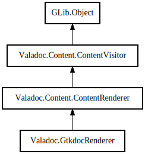

GtkdocRenderer
Object Hierarchy:

Description:
public class GtkdocRenderer :
ContentRenderer
Content:
Properties:
Creation methods:
Methods:
Fields:
Inherited Members:
All known members inherited from class Valadoc.Content.ContentRenderer
All known members inherited from class Valadoc.Content.ContentVisitor
All known members inherited from class GLib.Object